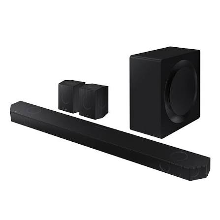
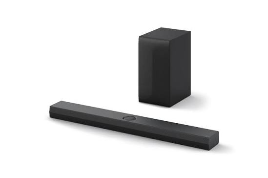
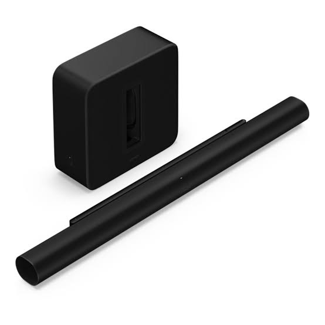

Home theater · Soundbars
Samsung, LG or Sonos? Choosing a premium soundbar for the room you actually have
Three flagship systems, three different ideas about what a soundbar should be. This guide sorts out the differences that show up on an ordinary evening in front of the TV, not only on a spec sheet.

01The short version
Most soundbar comparisons treat these three products as if they were equals. They are not, and that matters more than any single feature. Samsung and LG sell complete surround kits. Sonos sells one very good bar and lets you decide what else to buy.
Samsung HW-Q990F
Full kit, Samsung TV ownersThe loudest, most feature-packed box of the three, with a sub and two rear speakers included. It rewards a Samsung television and a room with space for the extras.
LG S95 series
Full kit, LG OLED ownersA similar package with strong dialogue handling and tidy wireless links to LG televisions. The best fit if your TV already carries the LG badge.
Sonos Arc Ultra
One bar, room to growCompact, brand-neutral and easy to live with. Cheapest to start, but a full surround system costs the most once you add a sub and rear speakers.
If you remember one thing from this page, make it this: decide first whether you want to buy a finished system today or grow one over a couple of years. Everything else follows from that choice.
02What each box contains
Start with the carton, because it settles half the argument before any speaker makes a sound. Samsung's HW-Q990F is sold as a system: the main bar, a wireless subwoofer and a pair of wireless rear speakers. Samsung describes the layout as 11.1.4 channels across 23 speakers, and most listings quote 756 watts, although some regional variants are rated at 656 watts. If you compare prices across countries, check which version you are actually looking at.
LG follows the same recipe with a slightly different balance. The S95TR and the newer S95AR share a 9.1.5 layout and roughly 810 watts, again with a wireless subwoofer and two rear speakers. The rears fire upward as well as toward the sides, and the bar itself carries a centre up-firing channel aimed at speech.
Sonos went another way. The Arc Ultra is a single bar, about 1,178 mm wide and 5.9 kg, with 14 drivers: seven tweeters, six midwoofers and one bass driver that Sonos calls Sound Motion. There is nothing else in the carton except cables. Sonos will happily sell you a Sub and a pair of Era 300 speakers later, but that is a separate purchase and a separate decision.


03Specs side by side
The table below collects the figures that matter for a buying decision. Wattage is useful for comparing Samsung with LG, but Sonos does not publish a power rating, so do not read too much into the gap.
| Feature | Samsung HW-Q990F | LG S95TR / S95AR | Sonos Arc Ultra |
|---|---|---|---|
| Channel layout | 11.1.4 | 9.1.5 | Renders 9.1.4 from one bar |
| Stated power | 756 W (656 W in some regions) | About 810 W | Not published; 15 Class-D amplifiers |
| In the box | Bar, wireless sub, two wireless rears | Bar, wireless sub, two wireless rears | Bar only |
| HDMI | Input plus eARC output, 4K/120 passthrough | HDMI 2.1 eARC output plus one input, 4K/120 passthrough | eARC only, no inputs |
| Wireless | Wi-Fi, Bluetooth 5.3, AirPlay 2, Google Cast, Alexa built in | Wi-Fi, Bluetooth, AirPlay 2, Chromecast | Wi-Fi 6, Bluetooth 5.3, AirPlay 2, Sonos app |
| Room correction | SpaceFit Sound Pro Plus (sensors in the bar) | AI Room Calibration | Trueplay (iOS and Android) |
| TV synergy | Q-Symphony with compatible Samsung TVs | WOW Orchestra and WOWCAST with select LG TVs | Works with any TV, learns your TV remote |
| Reference price | Listed at about $1,999 in the US, often discounted | Varies by retailer, check current listings | $999 at launch, bar only |
04How each one builds the sound field
Channel counts like 11.1.4 sound like a code, but the idea is simple. The first number is speakers around you at ear height, the second is the bass channel, and the third is speakers that point at the ceiling to suggest sound from above. More real speakers in more places generally means less guesswork for the software.
Samsung and LG lean on that principle. Because they ship rear speakers, sound from behind you actually comes from behind you. Effects in a film, a helicopter passing overhead or rain in a game, are placed by hardware in the room rather than by clever processing in one box in front of you.
Sonos has to do the same job from a single bar, and it does it by bouncing sound off the walls and ceiling. Up-firing drivers and a wide array of tweeters aim sound around the room, and the result depends heavily on the room itself. In a rectangular space with a reasonably flat ceiling and walls, the trick works well. In an alcove, a very high ceiling or a room full of glass and open doorways, the illusion thins out.
None of this makes the single bar a bad idea. It makes it a different bet. You are trading a bigger, more accurate surround field for a tidy room with far fewer cables, and plenty of people make that trade happily.
05Dialogue and late-night viewing
Ask people what annoys them most about TV sound and the answer is rarely a lack of power. It is mumbled speech, followed by a jump in volume when the action starts. Whatever else you buy, take a close look at how a bar treats voices.
LG gives dialogue its own up-firing centre channel, and the company leans on that feature in its marketing. Samsung includes what it calls Active Voice Amplifier Pro, which listens to the surrounding noise in the room and raises speech to compensate. Sonos offers Speech Enhancement with several adjustable levels, and it can be turned up until voices sit clearly on top of the mix.
All three also offer some form of night mode that squeezes the gap between quiet and loud passages. Samsung and LG call it night mode, and Sonos calls it Night Sound. The details differ, but the goal is the same: you should be able to watch after the household has gone to bed without reaching for the remote every few minutes.
One practical point is worth repeating. Speech clarity depends on the source as much as the bar. A streaming service that sends a compressed stereo mix will sound different from a disc with a proper multichannel track. If a film feels muddy on one app and clear on another, do not blame the hardware straight away.
06Bass and the subwoofer question
Bass is where the box contents show up most clearly. The Samsung sub is a 300 watt unit in most listings, and the LG sub is a bass-reflex design with a redesigned larger driver on the newer S95AR. Both give a soundbar system a weight that no bar-only product can fully match, simply because a separate box can move more air.
The Arc Ultra takes a different approach. Its Sound Motion bass driver is built into the bar and is meant to reach lower than the original Arc could. That is a real improvement, and for music and dialogue-heavy shows it may be all you need. For explosions and organ music at high volume, a dedicated sub still makes a noticeable difference, which is why Sonos sells one.
If you live in an apartment, think carefully before chasing big bass. A powerful subwoofer is great fun until the neighbour below knocks on the ceiling. Both Samsung and LG let you tone the bass down, and Sonos lets you set the sub level in its app, but a smaller, gentler system can be the smarter buy in a thin-walled building. Buying more capability than you can use at ten in the evening is a common way to waste money.
Placement matters as well. A subwoofer pushed into a corner sounds louder and boomier than one placed along a wall, and both extremes can be improved by moving it a metre or so. Take a few minutes to try different spots before settling on one.
07HDMI, consoles and gaming
The connection at the back of the bar decides how much of your other equipment plays nicely with it. Here the three products separate quite sharply.
Samsung and LG both accept a device on an HDMI input and pass the picture through to the TV, including 4K at 120 Hz. LG also lists support for variable refresh rate and automatic low-latency mode, and Samsung includes a Game Mode Pro that adjusts the sound for games. If you have a console and want to plug it into the soundbar rather than the TV, both are workable.
The Arc Ultra has a single HDMI port, and it is an eARC port. There is no input at all. Everything you own, the console, the streaming box and the disc player, has to go into the TV, which then sends audio to the bar. For most households that is fine, since modern TVs have several HDMI ports and pass sound back cleanly. It becomes a problem only if your TV has few eARC-capable ports or if you rely on a receiver-style setup.
A quick check before you buy
- Find out which HDMI port on your TV supports eARC. It is usually marked, and it is often a single port.
- Count how many devices you plan to connect and decide whether they can all live on the TV.
- If you game at 120 Hz, confirm that the bar you choose passes the signal through, or keep the console connected directly to the TV.
- Check whether your TV supports Dolby Atmos over eARC, since not all models do.
08Pairing with your TV
This is the section where brand loyalty starts to earn its keep. Samsung's Q-Symphony lets a compatible Samsung TV use its own speakers together with the soundbar, so the television adds to the overall sound instead of going silent. LG has an equivalent in WOW Orchestra, and its WOWCAST feature links a compatible LG TV to the bar wirelessly so you can skip the HDMI cable in some setups. Both companies also let you control the bar through the TV interface.
Those extras are limited by model. Q-Symphony works with Samsung TVs, and Samsung's wireless Dolby Atmos link is tied to compatible Samsung sets, while LG says its WOW features are available only on select LG TVs and select bars. Buy across brands and you lose the extras, though the bar still plays sound from any television over HDMI.
Sonos is the neutral option. It pairs with any TV that has an eARC or ARC port, learns your existing remote, and does not depend on a matching television. In exchange, the TV speakers stay silent, and you are relying on the bar alone.
Our advice is simple. If you already own a recent Samsung or LG TV, take the matching bar seriously and read the compatibility notes for your exact model. If your TV is a different brand, or you plan to replace it within a couple of years, Sonos removes the risk that the next television will not talk to the bar.
09Apps and the wider ecosystem
A soundbar is a piece of furniture you interact with every day, so its software counts. Samsung and LG run their bars through their own apps and the menus on the TV. They support AirPlay 2 for Apple devices and Google Cast for Android, so streaming from a phone is straightforward, and Samsung adds Alexa built in.
Sonos is a platform in its own right. Its app lets you group the bar with other Sonos speakers around the house, so music can follow you from the living room to the kitchen or play in several rooms at once. It supports AirPlay 2 and Spotify Connect, but not Google Cast. It can also swap TV audio to Sonos Ace headphones for private listening, which is a handy trick for late nights.
It would be dishonest to call the software flawless. Sonos rebuilt its app in the spring of 2024, and the release was rough enough that the company apologized publicly and spent months restoring missing features. Reports since then suggest it has settled down, but a brand's reputation for polish should be weighed against what actually happened.
The question to ask yourself is whether you want a home audio system or a home theater. If you would enjoy adding a speaker in the kitchen next year, Sonos offers a real advantage. If your goal ends at the TV, the apps matter much less, and the stronger hardware from Samsung or LG may serve you better.
10Room correction
Every room changes sound. A sofa against the back wall, a bare floor or a big window all reshape what reaches your ears. Each of these systems tries to compensate.
Samsung uses SpaceFit Sound Pro Plus, which relies on sensors built into the bar to analyze the space and adjust the sound, including the bass. LG uses AI Room Calibration to do a similar job. Sonos uses Trueplay, which asks you to walk around the room while the phone's microphone listens to test tones, and on the Arc Ultra it works on both iPhone and Android.
The automatic systems from Samsung and LG are quicker, because they require no walking around. Trueplay takes a few minutes but gives you a clear sense of taking part. In every case the result is a starting point. If a room sounds too boomy or thin after calibration, use the equalizer settings and adjust by ear.
11What it really costs
The sticker price is the least informative number on this page. Because Samsung and LG include the sub and the rear speakers, their price covers a working surround system. Samsung's flagship was listed at roughly $2,000 in the US, and retailers often discount it well below that. LG prices move around by retailer and season, so compare a few current listings before deciding.
Sonos begins at $999 for the Arc Ultra, which looks like a bargain next to the others. It stops looking that way once you build the system Sonos actually recommends. In round numbers, at launch list prices, an Arc Ultra with a Sonos Sub and a pair of Era 300 rear speakers lands near $2,700, which is more than either rival. Prices change often, so treat those figures as a guide and check the current listings.
The fair way to compare is to decide what you will really buy. If you will stay with the bar alone, Sonos is cheaper. If you know you want rear speakers and a sub within a year, the all-in-one kits from Samsung and LG usually cost less. It is also worth thinking about resale. Sonos speakers work in any home, so they are easier to pass on than a kit that makes the most sense with one TV brand.
12Match it to your room
Every choice above depends on where the system will live. These three common situations cover most of the questions we see.
Choose the Arc Ultra, or at most a bar-and-sub setup. Rear speakers are wasted in a compact room where the sofa sits close to the back wall, and a loud sub is a problem for neighbours. A single bar keeps the room tidy and still fills the space.
Take the Samsung or LG kit. Sound in a big, open room escapes in every direction, and real rear speakers keep the surround effect from fading. A bar alone has fewer walls to bounce off, so it needs more help here.
Either full kit works, and the deciding factor is the TV. Pair a Samsung bar with a Samsung set or an LG bar with an LG OLED. If you like to tinker and add speakers over time, a Sonos setup in a room like this can grow into something impressive.
13Mistakes worth avoiding
- Ignoring the power outlet. The rear speakers are wireless for audio, but they still need mains power. Plan for two extra sockets behind the sofa, and a way to hide the cables.
- Buying by wattage. Watts describe how much an amplifier can deliver, not how good the sound is. A thoughtful layout in a suitable room beats a bigger number on the box.
- Forgetting the TV stand. A tall bar can block the TV's remote sensor, and a wide one may not fit on a narrow shelf. Measure the space before you order.
- Skipping the eARC check. If the wrong TV port is in use, Atmos may not reach the bar at all. Read the TV manual and confirm which port is which.
- Judging by the showroom. Stores are loud and full of hard surfaces, so a demo tells you little about your own living room. If possible, buy from somewhere with an easy return policy and test at home.
- Assuming every brand pairs with every TV. The special features listed earlier depend on the model. Confirm compatibility for your exact TV before you buy.
14Our verdict
There is no single winner, which is what makes the question worth asking. This is how we would think it through.
Choose the Samsung HW-Q990F if you own a recent Samsung TV, have a big enough room, and want a complete system with the most features in one purchase. It offers the widest set of features, and the price often falls below the list figure.
Choose the LG S95 if you own an LG OLED and care most about clear speech and a tidy wireless connection to the television. It matches Samsung's approach with a slightly different balance, and the results should feel familiar.
Choose the Sonos Arc Ultra if you value a simple, good-looking bar that works with any TV, and you would like the option of adding speakers around the house later. Accept up front that a full surround system will cost more than the alternatives.
Whichever you pick, buy from a seller with a decent return window, set the bar up properly, and give yourself a week of normal viewing before deciding. Sound preferences settle down after the first few evenings.
15Questions people ask
Do I need rear speakers at all?
No. A good bar on its own is a large step up from TV speakers. Rear speakers add the most in medium and large rooms where you sit away from the back wall. In a small room they matter less.
Can I use a Samsung bar with an LG TV?
Yes, over HDMI eARC. You will lose the Samsung-specific extras such as Q-Symphony and the wireless Atmos link, but the bar will still play sound from the TV.
Is Dolby Atmos worth paying for?
It depends on your content. Many streaming services and discs carry Atmos tracks, and a bar with up-firing speakers can make good use of them. If you mostly watch broadcast TV or older shows, you will hear less difference.
Will the Sonos Arc Ultra work without a Sonos sub?
Yes. The bar has its own bass driver and works fine alone. The sub is an optional extra for people who want more low-end weight.
How long do these systems last?
Hardware tends to last many years, but software support is the real limit. Before buying, look at how long the brand has kept older products updated and how it has handled app changes.